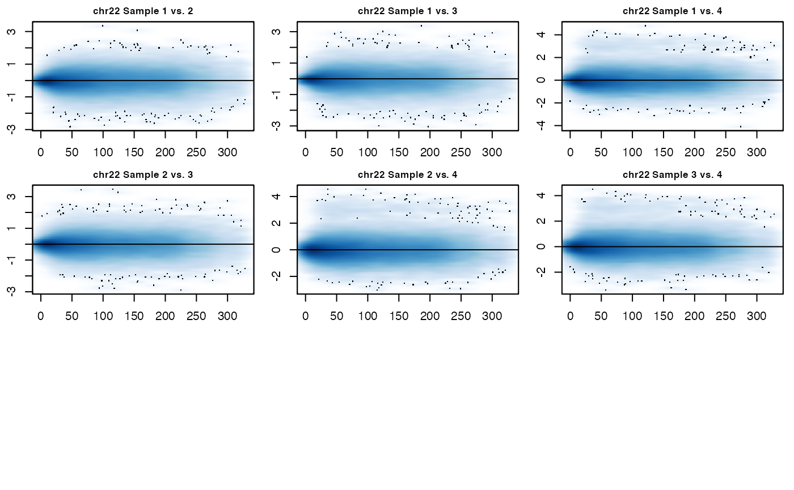
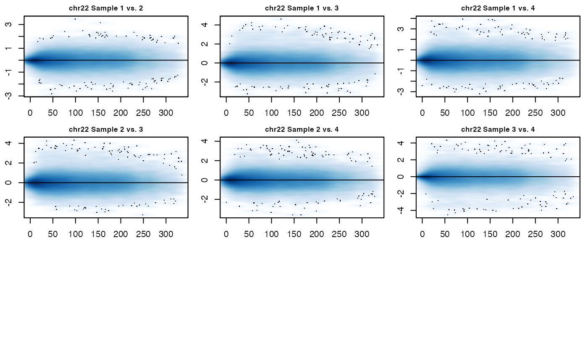
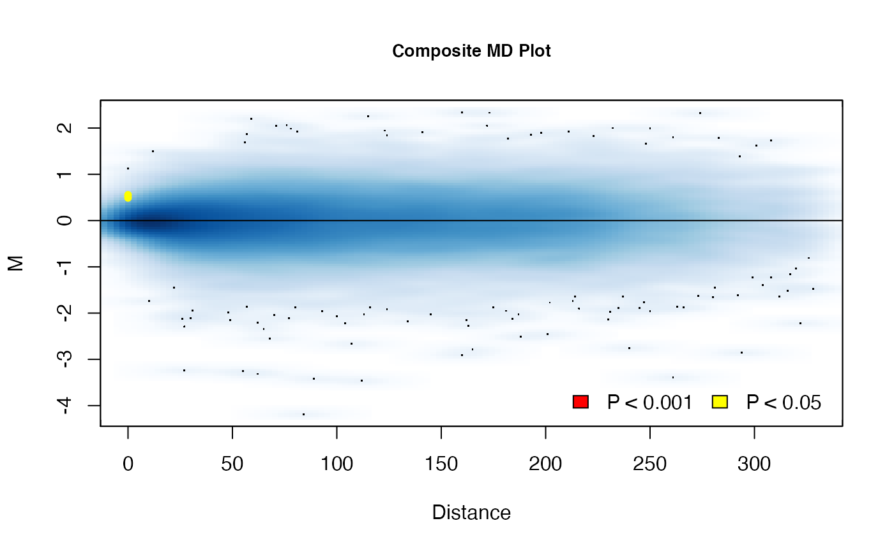
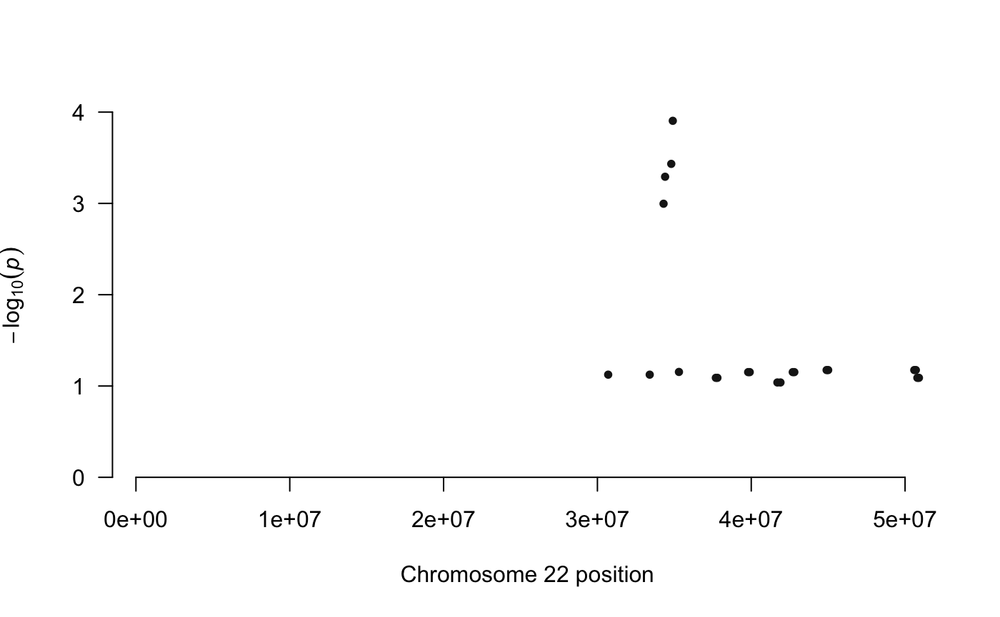
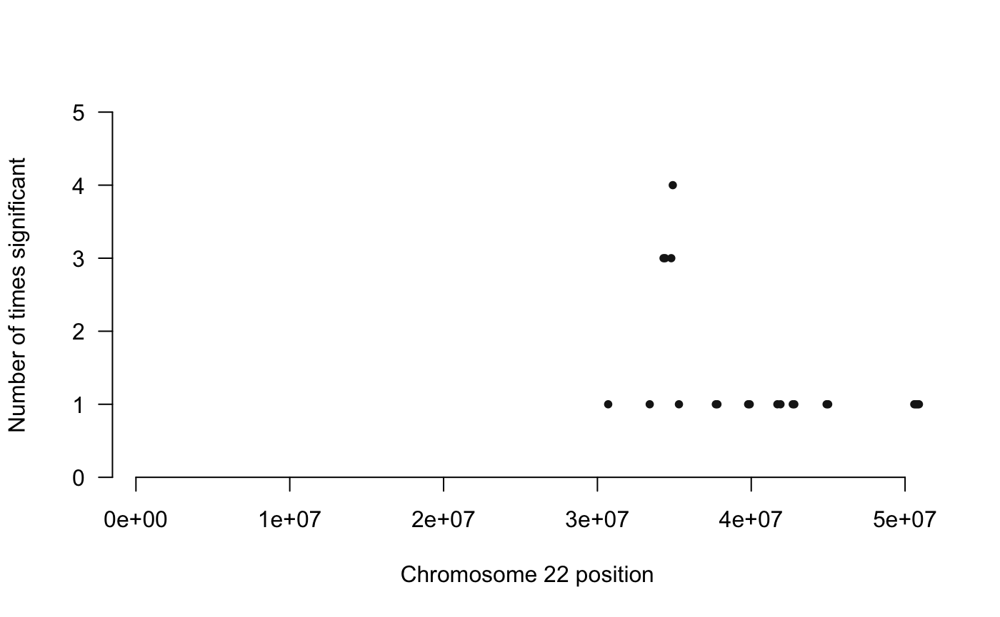
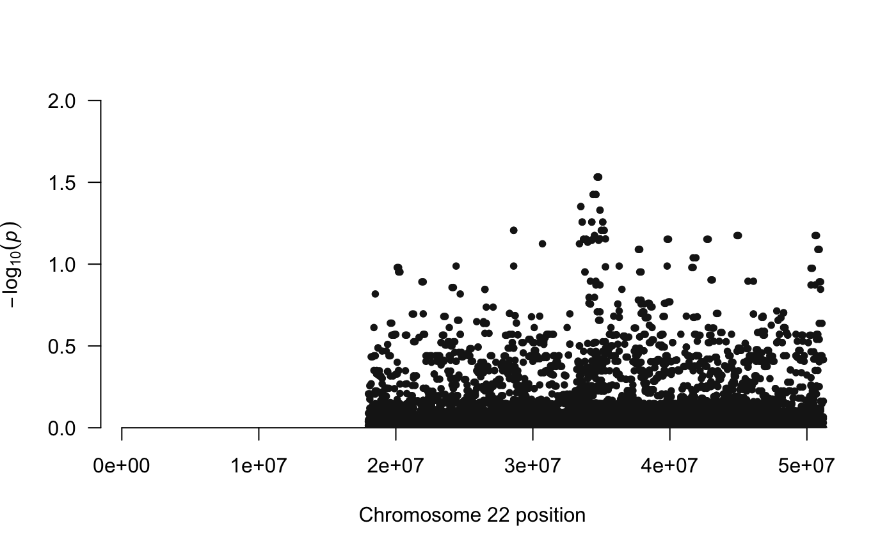
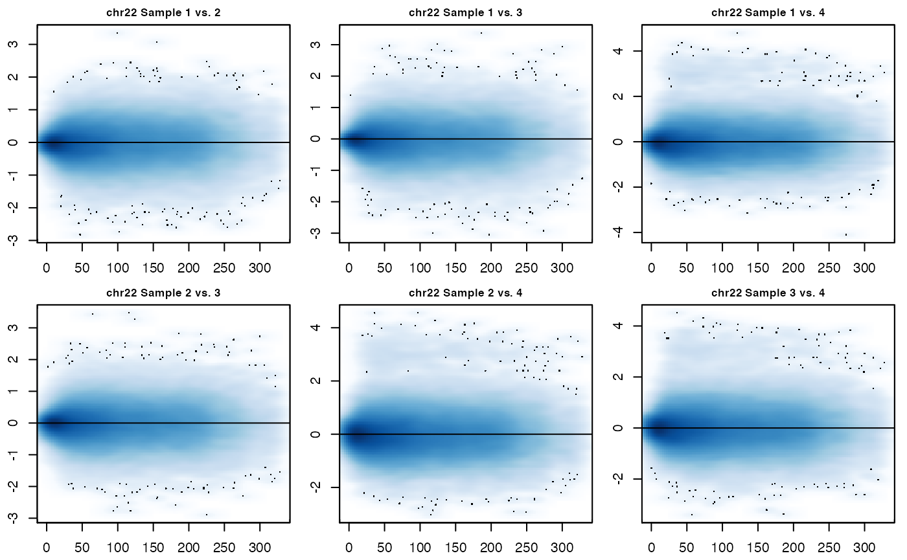

multiHiCcompare Vignette
John C. Stansfield & Mikhail G. Dozmorov
Source:vignettes/multiHiCcompare.Rmd
multiHiCcompare.RmdIntroduction
multiHiCcompare is an extension of the original HiCcompare package. It provides functions for the joint normalization and detection of differential chromatin interactions between multiple Hi-C datasets. multiHiCcompare operates on processed Hi-C data in the form of chromosome-specific chromatin interaction matrices. It accepts four-column tab-separated text files storing chromatin interaction matrices in a sparse matrix format (see Creating the hicexp object). Functions to convert popular Hi-C data formats (.hic, .cool) to sparse format are available (see ?cooleHCT116_r2sparse, and the examples below). multiHiCcompare differs from other packages that attempt to compare Hi-C data in that it works on processed data in chromatin interaction matrix format instead of raw sequencing data. In addition, multiHiCcompare provides a non-parametric method for the joint normalization and removal of biases between multiple Hi-C datasets for comparative analysis. multiHiCcompare also provides a general linear model (GLM) based framework for detecting differences in Hi-C data.
How to use multiHiCcompare
Install multiHiCcompare from Bioconductor
BiocManager::install("multiHiCcompare")
library(multiHiCcompare)Getting Hi-C Data
You will need processed Hi-C data in the form of sparse upper triangular matrices or BEDPE files to use multiHiCcompare. Data is available from several sources and two examples for downloading and extracting data are listed below. If you have full Hi-C contact matrices, you can convert them to sparse upper triangular format using the full full2sparse function as shown in additional functions
Extracting data from .hic files
Hi-C data is available from several sources and in many formats. multiHiCcompare is built to work with the sparse upper triangular matrix format popularized by the lab of Erez Lieberman-Aiden http://aidenlab.org/data.html. If you already have Hi-C data either in the form of a sparse upper triangular matrix or a full contact matrix you can skip to the creating the hicexp object section. If you obtain data from the Aiden Lab in the .hic format you will need to first extract the matrices that you wish to compare.
- Download the
strawsoftware from https://github.com/theaidenlab/straw/wiki and install it. - Use
strawto extract a Hi-C sparse upper triangular matrix. An example is below:
Say we downloaded and uncompressed the GSE63525_K562_combined_30.hic file from GEO https://www.ncbi.nlm.nih.gov/geo/query/acc.cgi?acc=GSE63525, direct link ftp, http
To extract the raw matrix corresponding to chromosome 22 at the 500kb resolution we would use the following command within the terminal
./straw NONE GSE63525_K562_combined_30.hic 22 22 BP 500000 > K562.chHCT116_r22.500kb.txt
This will extract the matrix from the .hic file and save it to the K562.chHCT116_r22.500kb.txt text file, in the sparse upper triangular matrix format. See more examples on how to use straw at https://github.com/theaidenlab/straw/wiki/CPP#running. Straw requires several inputs for the extraction of data from a .hic file.
<NONE/VC/VC_SQRT/KR> <hicFile(s)> <chr1>[:x1:x2] <chr2>[:y1:y2] <BP/FRAG> <binsize>
The first argument is the normalization method. For use in multiHiCcompare you want the raw data so you should select NONE. The second argument is the .hic file name. Next is the chromosome numbers of the matrix you want. For an intrachromosomal contact map, both should be the same as in the above example. If you want a matrix of interchromosomal interactions, you can use different chromosomes, i.e. interactions between chromosome 1 and chromosome 2 (Note that HiCcompare is only meant to be used on intrachromosomal interactions at this point in development). The next argument is whether you want basepair or fragment files. For multiHiCcompare use BP. The final argument is the bin size of the matrix (the resolution). To extract a matrix at a resolution of 1MB enter 10000000. Typical bin sizes are 1MB, 500KB, 100KB, 50KB, 5KB, 1KB. Note that most matrices with resolutions higher than 100KB (i.e., matrices with resolutions of 1KB - 50KB) are typically too sparse (due to insufficient sequencing coverage) for analysis in multiHiCcompare.
From here we can import the matrix into R as you would normally for any tab-delimited file.
- Import the data into R
K562.chr22 <- read.table('K562.chr22.500kb.txt', header=FALSE) - Repeat these steps for any other Hi-C dataset that you wish to compare to the first dataset using
multiHiCcompare.
Extracting data from .cool files
The cooler software, http://cooler.readthedocs.io/en/latest/index.html, allows access to a large collection of Hi-C data. The cooler index ftp://cooler.csail.mit.edu/coolers contains Hi-C data for hg19 and mm9 from many different sources. To use data in the .cool format in HiCcompare follow these steps:
- Download and install
coolerfrom http://cooler.readthedocs.io/en/latest/index.html - Download a
.coolfile from the cooler index ftp://cooler.csail.mit.edu/coolers. - Say we downloaded the
Dixon2012-H1hESC-HindIII-allreps-filtered.1000kb.coolfile. Seecooler dump --helpfor data extraction options. To extract the contact matrix we use the following commands in the terminal:cooler dump --join Dixon2012-H1hESC-HindIII-allreps-filtered.1000kb.cool > dixon.hESC.1000kb.txt - Read in the text file as you would any tab-delimited file in R
hesc1000kb <- read.table("dixon.hESC.1000kb.txt", header = FALSE) - Convert to a sparse upper triangular matrix using the
HiCcompare::cooler2sparsefunction.sparse <- cooler2sparse(hesc1000kb) - Repeat the steps for another Hi-C dataset that you wish to compare to the first dataset.
Using data from HiC-Pro
HiC-Pro is another tool for processing raw Hi-C data into usable matrix files. HiC-Pro will produce a .matrix file and a .bed file for the data. These .matrix files are in a sparse upper triangular format similar to the results of Juicer and the dumped contents of a .hic file, however instead of using the genomic start coordinates for the first two columns of the sparse matrix they use an ID number. The .bed file contains the mappings for each of these IDs to their genomic coordinates. The original HiCcompare package includes a function to convert the results of HiC-Pro into a usable format for analysis in multiHiCcompare. When using data from HiC-Pro, it is important to use the raw .matrix files and NOT the iced .matrix files. The iced .matrix files have already had ICE normalization applied to them and are not suitable for entry into multiHiCcompare. Here we convert HiC-Pro data for input into multiHiCcompare:
# read in files
mat <- read.table("hic_1000000.matrix")
bed <- read.table("hic_1000000_abs.bed")
# convert to BEDPE
dat <- HiCcompare::hicpro2bedpe(mat, bed)
# NOTE: hicpro2bedpe returns a list of lists.
# The first list, dat$cis, contains the intrachromosomal contact matrices
# NOTE: dat$trans contains the interchromosomal
# contact matrix which is not used in multiHiCcompare.See the help using ?HiCcompare::hicpro2bedpe for more details.
Parallel Processing
Hi-C data is large, especially at high resolutions, and loess normalization is computationally intensive. multiHiCcompare was built with parallelization in mind and the best performance when working with large Hi-C experiments (many samples or high resolution) will be achieved when using a computing cluster. Parallel processing can be used for all normalization and comparison functions by setting parallel = TRUE in the function options. multiHiCcompare uses the Bioconductor BiocParallel package for parallel processing. You can set the number of processors to use on Linux with the following command:
library(BiocParallel)
numCores <- 20
register(MulticoreParam(workers = numCores), default = TRUE)Or on Windows with:
library(BiocParallel)
numCores <- 20
register(SnowParam(workers = numCores), default = TRUE)where numCores is the user-set number of processing cores to be used. For parallel processing in multiHiCcompare, jobs are split by chromosome and sometimes distance thus the more processors used, the quicker the function will run. For maximum speed, it is recommended to set numCores to the maximum number of processors available.
Creating the hicexp object
Sparse upper triangular format
A sparse matrix format represents a relatively compact and human-readable way to store pair-wise interactions. It is a tab-delimited text format containing three columns: “region1” - a start coordinate (in bp) of the first region, “region2” a start coordinate of the second region, and “IF” - the interaction frequency between them (IFs). Zero IFs are dropped (hence, the sparse format). Since the full matrix of chromatin interactions is symmetric, only the upper triangular portion, including the diagonal, is stored. Typically matrices in this format are stored in separate text files for each chromosome. For use in multiHiCcompare, you will need to add a column for the chromosome number. The chromosome number should be entered as just the number. Chromosomes such as X, Y, etc. should be entered as 23, 24, etc. If you are planning to analyze data for more than a single chromosome, you will need to concatenate these matrices together. A sparse Hi-C matrix ready to be input into multiHiCcompare should look like the following:
data("HCT116_r1") # load example sparse matrix
head(HCT116_r1)
#> "22" V1 V2 V3
#> 1 22 16000000 16000000 11
#> 2 22 16100000 16100000 1
#> 3 22 16200000 16200000 3
#> 4 22 16300000 16300000 15
#> 5 22 16400000 16400000 3
#> 6 22 16400000 16500000 1
colnames(HCT116_r1) <- c('chr', 'region1', 'region2', 'IF') # rename columns
head(HCT116_r1) # matrix ready to be input into multiHiCcompare
#> chr region1 region2 IF
#> 1 22 16000000 16000000 11
#> 2 22 16100000 16100000 1
#> 3 22 16200000 16200000 3
#> 4 22 16300000 16300000 15
#> 5 22 16400000 16400000 3
#> 6 22 16400000 16500000 1If you have full Hi-C contact matrices you can convert them to sparse upper triangular matrices using the HiCcompare::full2sparse function and then add a column indicating the chromosome.
Say we have data from 2 experimental conditions with 2 samples each. We can make a hicexp object by doing the following.
data("HCT116_r1", "HCT116_r2", "HCT116_r3", "HCT116_r4")
hicexp1 <- make_hicexp(HCT116_r1, HCT116_r2, HCT116_r3, HCT116_r4,
groups = c(0, 0, 1, 1),
zero.p = 0.8, A.min = 5, filter = TRUE,
remove.regions = hg19_cyto)
hicexp1
#> Hi-C Experiment Object
#> 2 experimental groups
#> Group 1 has 2 samples
#> Group 2 has 2 samplesThe groups option specifies the experimental groups. You must enter a vector the length of the number of Hi-C matrices with indicators for which group each matrix belongs to. An optional covariate data.frame with rows corresponding the Hi-C matrices and columns for each additional covariate can be provided with the covariates option.
Filtering can be performed when creating a hicexp object using the zero.p and A.min options in the make_hicexp function. The zero.p option allows for filtering by the proportion of zero IFs for an interaction. The A.min allows for filtering by a minimum average IF value. These options can be used together or individually to filter your data. Filtering is important to remove interactions with lots of 0 IFs and low average expression. These interactions tend to not be very interesting and can easily become a false positive during difference detection. Additionally, removing these interactions will increase the computational speed of multiHiCcompare. If for some reason you do not want to filter the data simply set filter = FALSE.
Additionally, you can filter out specific genomic regions such as centromeres or blacklisted regions. multiHiCcompare comes with built-in regions to be filtered for hg19 and hg38 which can be accessed like so.
data("hg19_cyto")
data("hg38_cyto")
hg19_cyto
#> GRanges object with 70 ranges and 2 metadata columns:
#> seqnames ranges strand | arm feature
#> <Rle> <IRanges> <Rle> | <factor> <factor>
#> [1] 1 121500000-125000000 * | p11.1 acen
#> [2] 1 125000000-128900000 * | q11 acen
#> [3] 1 128900000-142600000 * | q12 gvar
#> [4] 10 38000000-40200000 * | p11.1 acen
#> [5] 10 40200000-42300000 * | q11.1 acen
#> ... ... ... ... . ... ...
#> [66] 23 58100000-60600000 * | p11.1 acen
#> [67] 23 60600000-63000000 * | q11.1 acen
#> [68] 24 11600000-12500000 * | p11.1 acen
#> [69] 24 12500000-13400000 * | q11.1 acen
#> [70] 24 28800000-59373566 * | q12 gvar
#> -------
#> seqinfo: 24 sequences from an unspecified genome; no seqlengthsBy default, the make_hicexp object will have the remove.regions option set to use the hg19_cyto object. If your data was not aligned to hg19 or you want other regions to be removed, you can create a GenomicRanges object containing the ranges to be removed and the remove.regions option to this object.
The hicexp object
The hicexp S4 class has several slots which can be accessed with the accessor functions hic_table(), results(), and meta(). The hic_table slot contains the Hi-C matrix in sparse format. The first four columns are the chromosome, region1 start location, region2 start location, and unit distance. All following chromosomes represent the IFs for that interacting pair from each sample. The comparison slot is empty at creation but will be filled following use of one of the comparison functions. It contains the same first four columns as the hic_table slot, but also has the logFC - log fold change between conditions, logCPM - log counts per million, p.value, and p.adj - multiple testing corrected p-value columns which indicate the significance of the difference for each interacting pair of regions between the conditions. Access the comparison slot using results(). The metadata slot contains the data.frame of covariates for the experiment. Access the metadata slot by using meta(). The other slots are mainly for internal use, and the typical user does not need to be concerned with them.
Normalization
multiHiCcompare comes with a few methods for normalizing your Hi-C data. Our joint normalization methods are again based on the MD plot as in the original HiCcompare. The MD plot is similar to the MA plot or the Bland-Altman plot. \(M\) is the \(log2\) difference between the interaction frequencies from the two datasets. \(D\) is the unit distance between the two interacting regions. Loess is performed on the data after it is represented in the MD coordinate system.
Library scaling
The simplest form of normalization to compare Hi-C data is library scaling. multiHiCcompare provides the hic_scale() function to scale the Hi-C libraries from each sample to the size of the smallest library. If you believe that any trends present in your data are important differences and not due to bias, then you can use library scaling for normalizing your data as follows.
Note that you need to use either simple scaling or loess normalization method. It is recommended to use either cyclic loess or fast loess that will implicitly rescale the libraries and remove unwanted trends.
Cyclic Loess Normalization
multiHiCcompare provides a cyclic loess method for the joint normalization of multiple Hi-C datasets. The method is based on representing the data on an MD plot. The MD plot is similar to the MA plot (Bland-Altman plot) which is commonly used for the visualization of gene expression differences. \(M\) is defined as the log difference between the two data sets \(M = log_2(IF_2/IF_1)\), where \(IF_1\) and \(IF_2\) are interaction frequencies of the first and the second Hi-C datasets, respectively. \(D\) is defined as the distance between two interacting regions, expressed in unit-length of the \(X\) resolution of the Hi-C data. A loess regression curve is fit through the MD plot and used to remove global biases by centering the \(M\) differences around \(M=0\) baseline.
The cyclic loess algorithm proceeds through the following steps.
- Choose two out of the \(N\) total samples then generate an MD plot.
- Fit a loess curve \(f(d)\) to the MD plot.
- Subtract \(f(d)/2\) from the first dataset and add \(f(d)/2\) to the second.
- Repeat until all unique pairs have been compared.
- Repeat until convergence.
To perform cyclic loess on your Hi-C data you will need to use the cyclic_loess() function as shown below:
hicexp1 <- cyclic_loess(hicexp1, verbose = FALSE,
parallel = FALSE, span = 0.2)
# make MD plot
MD_hicexp(hicexp1)
As can be seen in the above MD plots, the data for each sample has been jointly normalized with all other samples. Note that the user can set the span option. A user-set span will run quicker than the default option of automatically calculating the span. It is best to use the automatic span calculation if you have not worked with the data before, but if you are familiar with it then setting the span is a way to speed up processing. The hic_table slot in the hicexp object has also been updated with the normalized IFs.
hic_table(hicexp1)
#> chr region1 region2 D IF1 IF2 IF3 IF4
#> 1: 22 18000000 18000000 0 4848.93586 5117.56104 5757.67702 4330.37698
#> 2: 22 18000000 18100000 1 1307.53629 1128.57032 1317.91263 893.55501
#> 3: 22 18000000 18200000 2 715.99832 734.05089 729.32691 743.67190
#> 4: 22 18000000 18300000 3 352.17410 409.94247 420.22430 387.50225
#> 5: 22 18000000 18400000 4 296.77137 274.80602 306.21630 314.82774
#> ---
#> 43740: 22 51000000 51100000 1 1622.03802 1762.87853 1664.49400 1271.16626
#> 43741: 22 51000000 51200000 2 30.51641 35.06727 31.06704 22.70308
#> 43742: 22 51100000 51100000 0 3681.72778 4131.14202 4126.33930 3604.34388
#> 43743: 22 51100000 51200000 1 79.15003 63.50592 77.51615 57.56003
#> 43744: 22 51200000 51200000 0 17.19701 25.33298 28.78896 36.23247The runtime of cyclic loess can be decreased when multiple processors are available by setting the parallel option to TRUE. This option splits up the data by chromosome and sends each chromosome’s data to a parallel processor.
Fast Loess Normalization (Fastlo)
In addition to the standard cyclic loess method, multiHiCcompare also implements the Fast Loess (Fastlo) joint normalization algorithm. Our implementation of fastlo is adapted to Hi-C data on a per-distance basis. To perform “fastlo” on Hi-C data we first split the data into \(p\) pooled matrices. The “progressive pooling” is used to split up the Hi-C matrix by unit distance such that distance 0 is its own pool, distances 1 and 2 are pooled, distance 3, 4, 5 are pooled, and so on until all unit distances belong to one of \(p\) pools. Each matrix will have an \(IF_{gj}\) value with \(g\) interacting pairs for each of the \(j\) samples. These \(p\) matrices can then be input into the “fastlo” algorithm using the following steps.
- Create the vector \(\hat{IF}_{pgj}\), the row means of the \(p^{th}\) matrix. This is the equivalent of creating an average IF at distance pool \(p\).
- Plot \(\hat{IF}_{p}\) versus \((IF_{pg} - \hat{IF_p})\) for each sample \(j\). This is equivalent to an MA plot at a genomic distance pool \(p\).
- Fit a loess curve \(f(x)\) to the plot.
- Subtract \(f(x)\) from sample \(j\).
- Repeat for all remaining replicates.
- Repeat until algorithm converges.
You can perform fastlo normalization on your data as follows:
data("hicexp2")
# perform fastlo normalization
hicexp2 <- fastlo(hicexp2, verbose = FALSE, parallel = FALSE)
# make MD plot
MD_hicexp(hicexp2)
Again, the above MD plots show the normalized data. fastlo() can also make use of parallelization to speed up computation speeds by setting the parallel option to TRUE. The results of fastlo() and cyclic_loess() may be slightly different, but both should result in the removal of biases between Hi-C datasets. fastlo() will have quicker run times compared to cyclic_loess(), but cyclic_loess() will likely give a slightly better normalization.
Difference Detection
multiHiCcompare provides two main ways to perform a differential comparison between the groups or conditions of your Hi-C experiment. For simple experiments where only a comparison between two groups is being made, the hic_exactTest() function can be used. For more complex experiments with covariates or multiple groups, the hic_glm() function should be used. Both of these functions make use of the edgeR package for fitting negative binomial models to the Hi-C data. For the difference detection steps, multiHiCcompare first splits the data up by distance using the progressive pooling described in the fastlo section. Each distance pool is then treated similarly to an independent RNA-seq data matrix on which edgeR’s functions are applied to fit the specified model. This process is illustrated in Figure 1 below.

Figure 1. The off-diagonal analysis of multiple Hi-C replicates. Dashed lines represent the off-diagonal vectors of interaction frequencies at a given distance between interacting regions. Right: Converted into a matrix format similar to RNA-seq data, IFs can be loess normalized, variance across replicates can be estimated using an empirical Bayes approach, and differences can be detected using log-linear GLMs.
Exact Test
For simple Hi-C experiments the hic_exactTest() function can be used as shown below:
hicexp1 <- hic_exactTest(hicexp1, p.method = 'fdr',
parallel = FALSE)
# plot results
MD_composite(hicexp1)
The above composite MD plot displays where any significant differences are detected between the two groups. This function can also be sped up by using the parallel option. The results of the comparison are then saved in the comparison slot of the hicexp object.
results(hicexp1)
#> chr region1 region2 D logFC logCPM p.value p.adj
#> 1: 22 18000000 18000000 0 -0.002271489 11.162876 0.98355590 0.9978994
#> 2: 22 18000000 18100000 1 -0.166524611 9.056102 0.24699655 0.6200377
#> 3: 22 18000000 18200000 2 0.014611713 8.394195 0.91509193 0.9704410
#> 4: 22 18000000 18300000 3 0.064067277 10.298587 0.60748736 0.9685625
#> 5: 22 18000000 18400000 4 0.098498828 9.903732 0.45349569 0.9206592
#> ---
#> 43740: 22 51000000 51100000 1 -0.223639527 9.499253 0.07028879 0.3629536
#> 43741: 22 51000000 51200000 2 -0.299777832 3.866202 0.34735616 0.6875078
#> 43742: 22 51100000 51100000 0 -0.027527966 10.798143 0.80184233 0.9212657
#> 43743: 22 51100000 51200000 1 -0.097398299 5.032406 0.69220609 0.8790205
#> 43744: 22 51200000 51200000 0 0.602807182 3.727353 0.08237680 0.3831598In this data.table the first 3 columns represent the identity of the interaction, then followed by the unit genomic distance (D), the log fold change difference between the groups (logFC), the log counts per million for the interaction (logCPM), the p-value and finally the multiple testing correction p-value (p.adj). The type of multiple testing applied can be changed using the p.method option. To view what other adjustment methods are available look at the help for ?p.adjust.
GLM Methods
For more complex Hi-C experiments the hic_glm() function must be used. To use this function, a design matrix must first be created. Here use the hicexp2 object with some covariates and create the design matrix.
batch <- c(1,2,1,2)
# produce design matrix
d <- model.matrix(~factor(meta(hicexp2)$group) + factor(batch))The design matrix should contain the covariates of interest. Any categorical variables should be entered as factors. Next, the comparison of interest will need to be specified using either the contrast or the coef option. For this example we are interested in the group difference thus we can set coef = 2 to test if the group effect is equal to 0. For more information on using contrast and coef please see the edgeR user manual. Now we are ready to perform the comparison.
hicexp2 <- hic_glm(hicexp2, design = d, coef = 2, method = "QLFTest", p.method = "fdr", parallel = FALSE)There are three methods by which hic_glm() can be performed. The default method is to the use the QLFTest which makes use of the quasi-likelihood model. Additionally, there is the LRTest which conducts a likelihood ratio test. The final method is the Treat method which conducts a test relative to a specified fold change threshold. For this option, the M option will need to be used to specify the log2 fold change threshold.
# use Treat option
hicexp2 <- hic_glm(hicexp2, design = d, coef = 2, method = "Treat",
M = 0.5, p.method = "fdr", parallel = FALSE)Downstream analysis
For downstream analysis of the results of multiHiCcompare, you may want to filter the results. This can be accomplished by using the topDirs function. Setting the return_df = 'pairedbed' will return a table of the interacting pairs filtered by your specifications.
td <- topDirs(hicexp1, logfc_cutoff = 0.5, logcpm_cutoff = 0.5,
p.adj_cutoff = 0.2, return_df = 'pairedbed')
head(td)
#> chr1 start1 end1 chr2 start2 end2 D logFC logCPM
#> 1: chr22 18500000 18599999 chr22 24700000 24799999 62 1.1694 9.7256
#> 2: chr22 20200000 20299999 chr22 20300000 20399999 1 -0.5443 6.2774
#> 3: chr22 24400000 24499999 chr22 36300000 36399999 119 1.6664 9.4722
#> 4: chr22 26600000 26699999 chr22 27100000 27199999 5 0.5351 8.9949
#> 5: chr22 28600000 28699999 chr22 39800000 39899999 112 -3.4597 8.0822
#> 6: chr22 30700000 30799999 chr22 33400000 33499999 27 -3.2383 7.1872
#> p.value p.adj
#> 1: 5.9373E-05 1.5217E-01
#> 2: 3.4394E-03 1.1167E-01
#> 3: 8.9882E-05 1.0274E-01
#> 4: 1.7285E-03 1.8303E-01
#> 5: 5.1491E-05 1.0274E-01
#> 6: 3.6815E-05 7.5102E-02Additionally, you can summarize the regions that were detected as significant at least once by setting return_df = 'bed'.
counts <- topDirs(hicexp1, logfc_cutoff = 0.5, logcpm_cutoff = 0.5,
p.adj_cutoff = 0.2, return_df = 'bed', pval_aggregate = "max")
head(counts)
#> chr start end count avgD avgLogFC avgLogCPM avgP.adj
#> 1: chr22 36300000 36399999 2 117 1.9627 9.0681 1.9318E-01
#> 2: chr22 18500000 18599999 1 62 1.1694 9.7256 1.5217E-01
#> 3: chr22 20200000 20299999 1 1 -0.5443 6.2774 1.1167E-01
#> 4: chr22 20300000 20399999 1 1 -0.5443 6.2774 1.1167E-01
#> 5: chr22 24400000 24499999 1 119 1.6664 9.4722 1.0274E-01
#> 6: chr22 24700000 24799999 1 62 1.1694 9.7256 1.5217E-01The resulting table when return_df = 'bed' is used can be input into the following plot function to visualize the p-values of the top differentially interacting regions (DIRs).
plot_pvals(counts)
Or to visualize the counts of the top DIRs.
plot_counts(counts)
Other functions
There are several other functions included in multiHiCcompare. manhattan_hicexp() produces a Manhattan plot for the results of a comparison to identify “hotspot” regions of the genome where large numbers of significant differences are found.
manhattan_hicexp(hicexp1, p.adj_cutoff = "standard")
There is also the MD plotting function MD_hicexp() which will plot MD plots for each unique pair of samples in the hicexp object.
MD_hicexp(hicexp1, prow = 2, pcol = 3)
The MD_composite() function will plot a composite MD plot of the results of a comparison where the significant differences are highlighted.
MD_composite(hicexp1)
Session Info
#> R version 4.0.2 (2020-06-22)
#> Platform: x86_64-apple-darwin17.0 (64-bit)
#> Running under: macOS 10.16
#>
#> Matrix products: default
#> BLAS: /Library/Frameworks/R.framework/Versions/4.0/Resources/lib/libRblas.dylib
#> LAPACK: /Library/Frameworks/R.framework/Versions/4.0/Resources/lib/libRlapack.dylib
#>
#> locale:
#> [1] en_US.UTF-8/en_US.UTF-8/en_US.UTF-8/C/en_US.UTF-8/en_US.UTF-8
#>
#> attached base packages:
#> [1] stats graphics grDevices utils datasets methods base
#>
#> other attached packages:
#> [1] multiHiCcompare_1.9.0 BiocStyle_2.16.1
#>
#> loaded via a namespace (and not attached):
#> [1] nlme_3.1-150 bitops_1.0-6
#> [3] matrixStats_0.57.0 fs_1.5.0
#> [5] RColorBrewer_1.1-2 rprojroot_2.0.2
#> [7] GenomeInfoDb_1.24.2 InteractionSet_1.16.0
#> [9] tools_4.0.2 R6_2.5.0
#> [11] KernSmooth_2.23-18 BiocGenerics_0.34.0
#> [13] mgcv_1.8-33 colorspace_2.0-0
#> [15] DNAcopy_1.62.0 gridExtra_2.3
#> [17] tidyselect_1.1.0 aggregation_1.0.1
#> [19] compiler_4.0.2 textshaping_0.2.1
#> [21] Biobase_2.48.0 desc_1.2.0
#> [23] DelayedArray_0.14.1 bookdown_0.21
#> [25] scales_1.1.1 pbapply_1.4-3
#> [27] pkgdown_1.6.1 systemfonts_0.3.2
#> [29] stringr_1.4.0 digest_0.6.27
#> [31] Rsamtools_2.4.0 rmarkdown_2.5
#> [33] R.utils_2.10.1 XVector_0.28.0
#> [35] pkgconfig_2.0.3 htmltools_0.5.0
#> [37] parallelly_1.21.0 limma_3.44.3
#> [39] rlang_0.4.8 rstudioapi_0.13
#> [41] impute_1.62.0 generics_0.1.0
#> [43] gtools_3.8.2 BiocParallel_1.22.0
#> [45] dplyr_1.0.2 R.oo_1.24.0
#> [47] RCurl_1.98-1.2 magrittr_2.0.1
#> [49] GenomeInfoDbData_1.2.3 qqman_0.1.4
#> [51] Matrix_1.2-18 HiCcompare_1.10.0
#> [53] Rhdf5lib_1.10.1 Rcpp_1.0.5
#> [55] munsell_0.5.0 S4Vectors_0.26.1
#> [57] lifecycle_0.2.0 R.methodsS3_1.8.1
#> [59] stringi_1.5.3 CGHbase_1.48.0
#> [61] yaml_2.2.1 edgeR_3.30.3
#> [63] MASS_7.3-53 SummarizedExperiment_1.18.2
#> [65] zlibbioc_1.34.0 rhdf5_2.32.4
#> [67] grid_4.0.2 parallel_4.0.2
#> [69] listenv_0.8.0 crayon_1.3.4
#> [71] lattice_0.20-41 Biostrings_2.56.0
#> [73] splines_4.0.2 locfit_1.5-9.4
#> [75] knitr_1.30 pillar_1.4.7
#> [77] GenomicRanges_1.40.0 CGHcall_2.50.0
#> [79] future.apply_1.6.0 codetools_0.2-16
#> [81] marray_1.66.0 stats4_4.0.2
#> [83] glue_1.4.2 evaluate_0.14
#> [85] calibrate_1.7.7 data.table_1.13.2
#> [87] BiocManager_1.30.10 vctrs_0.3.5
#> [89] gtable_0.3.0 purrr_0.3.4
#> [91] future_1.20.1 assertthat_0.2.1
#> [93] QDNAseq_1.24.0 ggplot2_3.3.2
#> [95] xfun_0.19 ragg_0.4.0
#> [97] pheatmap_1.0.12 tibble_3.0.4
#> [99] memoise_1.1.0 IRanges_2.22.2
#> [101] globals_0.13.1 ellipsis_0.3.1